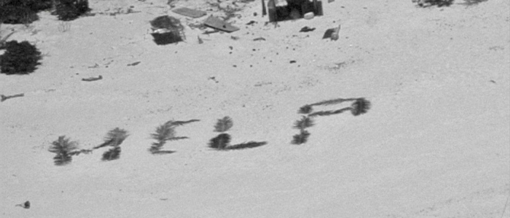

‘HELP’: Sign Helps Rescue Sailors After Being Stranded On Tiny Island For Over WeekThe U.S. Coast Guard and the U.S. Navy coordinated to save three experienced mariners stranded on an island in the Pacific after they spelled out the word ‘HELP’ on the sand using palm leaves. The three sailors were stranded on a tiny island in the Pacific Ocean for over a week until they were rescued on Tuesday thanks to the U.S. Coast Guard and the U.S. Navy. The castaways, all in their 40s, set out on Easter Sunday aboard a “small 20-foot open skiff equipped with an outboard motor,” according to the Coast Guard’s press release. A distress call from a relative of one of the mariners alerted the Coast Guard that the three men had not returned from their voyage. That’s when rescuers “began coordinating a multifaceted search and rescue operation.” A U.S. Navy P-8 aircraft crew from Kadena Air Force Base in Japan was dispatched and eventually identified the mariners and their “HELP” sign, according to the press release. Three castaways who were stranded on a remote Pacific islet for days were rescued this week after spelling out “HELP” with palm fronds on the beach, the U.S. Coast Guard said.https://t.co/zbDbQmHCIu — The Washington Post (@washingtonpost) April 11, 2024 “In a remarkable testament to their will to be found, the mariners spelled out “HELP” on the beach using palm leaves, a crucial factor in their discovery. This act of ingenuity was pivotal in guiding rescue efforts directly to their location,” said Lt. Chelsea Garcia, per the press release. “This successful operation underscores the effective coordination and partnership between the U.S. Coast Guard, the U.S. Navy, and regional partners. We extend our gratitude to everyone involved.” The sailors were found stuck on Pikelot Atoll, making this the second time castaways were found on the same island in four years, according to CBS News. (RELATED: ‘Everybody’s Freaking Out’: Passengers Desperately Attempt To Steady Sinking Ferry, One Dead: Video) “Whether we’re out there protecting valuable resources or saving lives, we’re not just visitors – we’re members of this vibrant maritime community that connects all these islands,” said Lt. Ray Cerrato in the press release. “This recent operation near Pikelot Atoll hits home the kind of difference we can make. It’s about more than just performing a duty; it’s about the real human connections we forge and the lives we touch.” |
 |